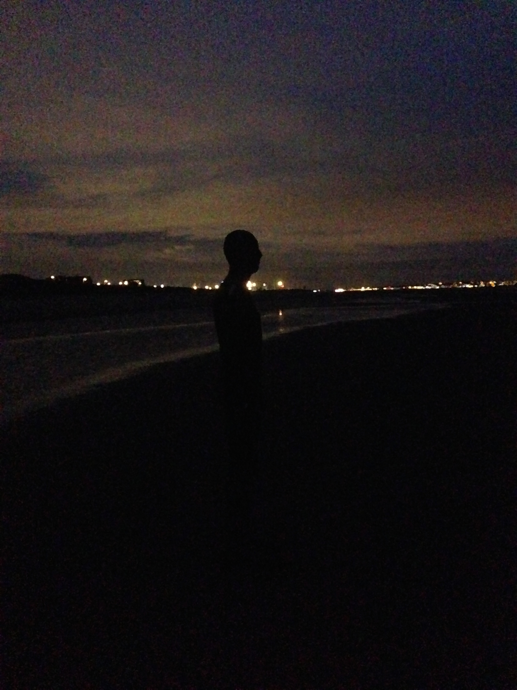

If you know me, you know I am a bit of an Anglophile. I LOVE British television. I would honestly love to one day live in London. I have been to London a few times, and the Tower Bridge is my favorite site. I just had a really good day when we visited, and so I always think of it fondly!

The last time I went to the UK, however, we focused on places other than London. I went down to Brighton, where I would also love to live, it's such a pleasant place!
We also went further north and visited Liverpool, where I was bowled over by the sculpture "Another Place" installed at Crosby Beach. We visited the beach after the sun had just set, and it was something to behold. I would love to visit again and again at different times of the day.

From Liverpool, we went further north to Scotland. I got to visit Glasgow and Edinburgh, which is one of the prettiest cities I have ever seen. I especially liked the Balmoral Hotel, which was so striking against the blue sky. I definitely also want to see more of Scotland - I look forward to one day visiting the highlands!